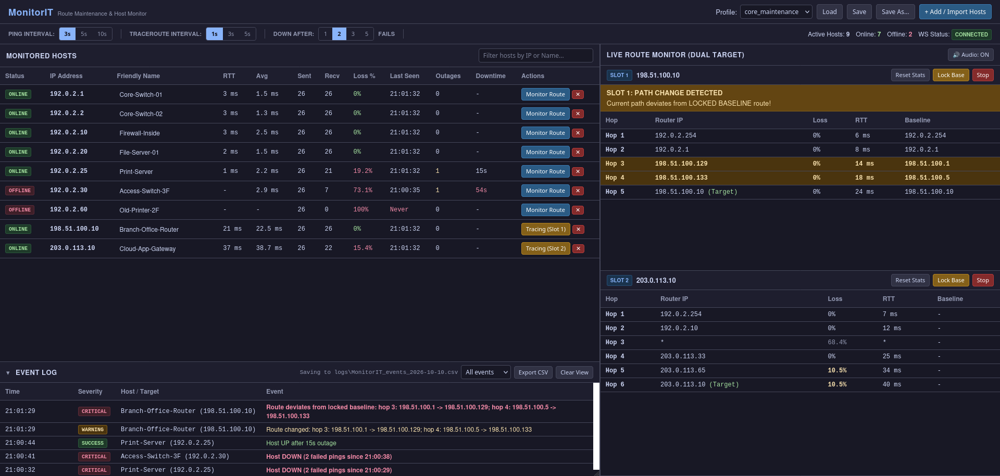
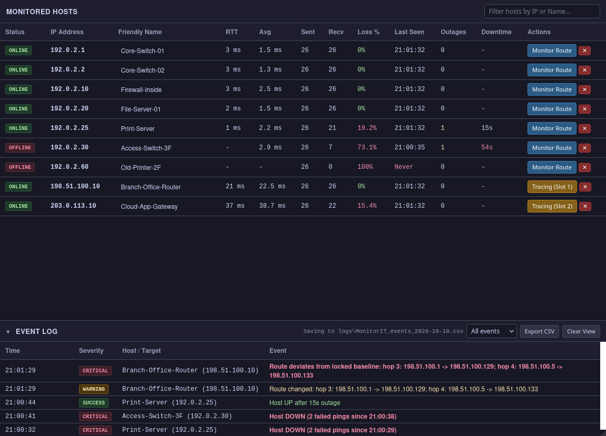
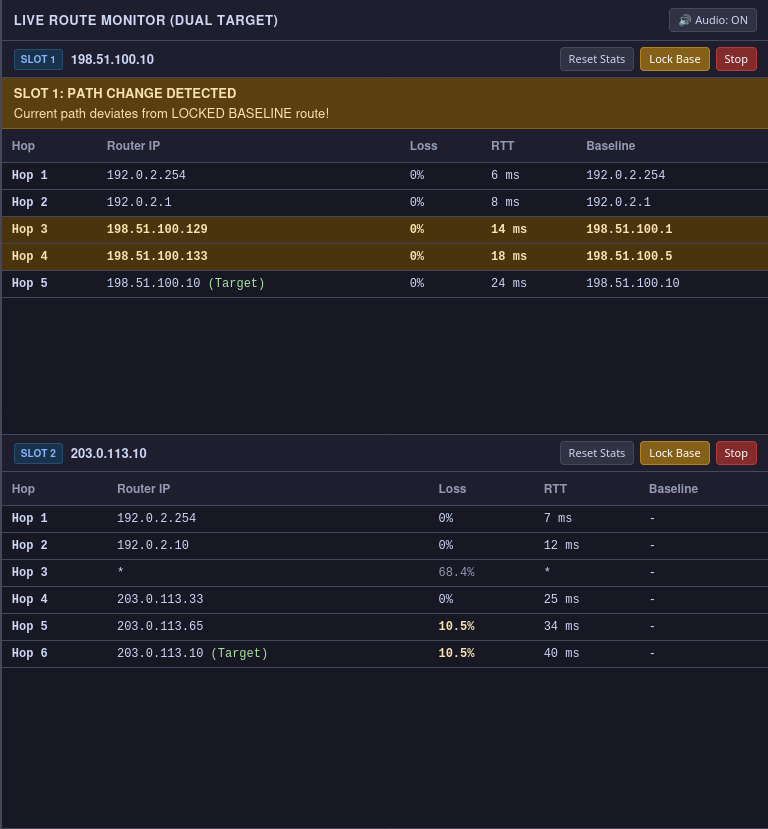
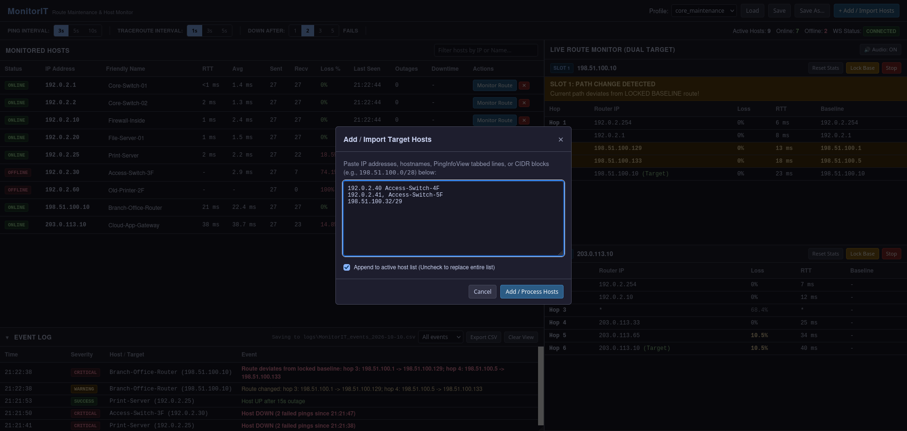

What is MonitorIT?
MonitorIT is a dashboard you keep open during a maintenance window. It pings a list of hosts continuously, like PingInfoView, and traces the route to up to two of them every second, like WinMTR, all on one screen. It tells you when something went down, for how long, and whether traffic took a different path.

What it does
- Pings every host in your list every 3, 5 or 10 seconds and shows its status, response time, packet loss, when it was last seen, how many outages it had and the total downtime.
- Traces the route to up to two hosts every second, with loss and response time per hop.
- Locks a baseline route before the change and warns you, with a banner and an optional beep, as soon as the path differs from it.
- Logs every event with a timestamp (host down, host up with the outage length, route changed, route back on baseline) to a daily CSV file that opens in Excel.
- Saves host lists as profiles, so you can reload your list for the next window.
MonitorIT only sends pings and traceroute probes. It never logs into or changes any device. It needs no installation and no admin rights.
Getting started
- Extract the zip to a folder you own, e.g.
Documents\MonitorIT: right-click the zip → Extract All…. Don't run it from inside the zip. - Double-click
LaunchIT.bat. A black console window opens, then your browser opens the dashboard athttp://127.0.0.1:8000. Keep the console window open while you use MonitorIT; closing it stops the app. - MonitorIT starts with the sample profile (localhost and a few public DNS servers). The public ones may show Offline if your network blocks ping to the internet. That's expected.
- Add your own hosts: click + Add / Import Hosts (see Adding hosts). Untick Append to replace the sample hosts instead of adding to them.
- Save your list: click Save As… and give it a name. Next time, pick it from the Profile list at the top and click Load.
LaunchIT.bat came from a zip. Click More info → Run anyway. If your laptop doesn't allow
that, right-click the zip → Properties → tick Unblock → OK, then extract it again.Watching hosts

| Status | Meaning |
|---|---|
| PENDING | Not pinged yet. |
| ONLINE | The last ping was answered. |
| TIMEOUT | Missed a ping, but not enough in a row to count as down yet. |
| OFFLINE | Missed the Down After number of pings in a row. An outage is logged. |
- Down After (toolbar) sets how many failed pings in a row mark a host down. The default is 2, so a single dropped ping doesn't raise an alarm. Use 1 for the fastest detection, or 3–5 on lossy links.
- Outages and Downtime count only for hosts that were up before. A host that has never answered shows Never under Last Seen.
- Hover over RTT, Avg, Outages or Downtime for more detail (min/avg/max, longest outage, when the current outage began).
- Click a Friendly Name to rename a host. Click ✕ to remove one from the list.
- Type in Filter hosts to find a host in a long list.
Watching a route

- Click Monitor Route next to a host. Its traceroute appears in slot 1 (a second host goes in slot 2).
- Before the change, once all hops have answered, click Lock Base. The current route becomes the baseline, shown in the Baseline column.
- If the route then differs from the baseline, the slot shows PATH CHANGE DETECTED, the hops that moved are highlighted, and the event log records it. When the route returns to the baseline, that's logged too.
- Turn Audio on (top right) to hear a beep on every route change, even when you're looking at another window.
- Reset Stats restarts that slot's loss counters, e.g. at the start of the window. The baseline is kept. Stop ends the traceroute.
Reading hop loss
Routers answer traceroute probes at low priority and often limit how many replies they send, so a hop can show loss while traffic through it is fine. MonitorIT works out which case it is:
| Loss shown as | Meaning |
|---|---|
| Amber, bold | The loss continues through every later hop to the destination: probably real packet loss. |
| Grey | Loss at this hop only, not at later hops: the router is limiting its replies. Not a problem. |
| Normal | No loss, or the destination hasn't answered yet, so it can't be judged. |
A hop shown as * didn't answer that probe. A hop that never answers is a router
set not to reply to traceroute; traffic still passes through it. Missing answers are never reported as
route changes. Hover over a hop for its full statistics.
The event log
- The strip under the host table lists every event, newest first: Critical (host down, route off baseline), Warning (route changed), Success (host back up, with how long it was down; route back on baseline) and Info.
- Use the filter to show Alerts only, Hosts or Routes. Click the header to fold the strip away; a red counter then shows new alerts.
- Every event is also saved to
logs\MonitorIT_events_YYYY-MM-DD.csvin the MonitorIT folder, one file per day. It opens in Excel, ready for the change report.
Adding hosts

| You can paste | Example |
|---|---|
| An IP address, optionally followed by a name | 192.0.2.40 Access-Switch-4F |
| Comma- or tab-separated lines (e.g. copied from Excel or a PingInfoView list) | 192.0.2.41, Access-Switch-5F |
| A hostname (looked up once, when you add it) | fileserver01 File Server |
| A subnet, up to a /22 (1,022 hosts) | 198.51.100.32/29 |
Lines that can't be used (a name that doesn't resolve, a duplicate, an IPv6 address, a subnet larger than /22) are listed back to you with the reason. Only IPv4 is supported.
Keeping things safe
- MonitorIT only listens on your own laptop (
127.0.0.1); nobody else on the network can reach the dashboard. - Your profiles and logs contain internal IP addresses and device names. They stay in the
profilesandlogsfolders on your laptop. Don't post them anywhere public. - If you pass MonitorIT on, share the original zip, not your own MonitorIT folder (it holds your profiles and logs).
- Log files are never deleted automatically. Delete old ones from
logswhen you no longer need them.
Updating to a new version
- Close MonitorIT (close its console window).
- Extract the new zip to a new folder.
- Copy your own profiles (the
.jsonfiles inprofiles) and, if you want to keep them, thelogsfolder from the old folder into the new one. - Run the new
LaunchIT.bat. Once it works, delete the old folder.
If something goes wrong
| What you see | What to do |
|---|---|
| The console window flashes and closes, or shows an error | Make sure you extracted the whole zip and are running LaunchIT.bat from the extracted folder. Send a screenshot of the console to whoever gave you MonitorIT. |
| The browser doesn't open | Open http://127.0.0.1:8000 yourself while the console window is open. |
| An error in the console saying "only one usage of each socket address" (error 10048) | Something is already using port 8000, often MonitorIT itself in another console window. Use that one, or close it first. If it's another program, open LaunchIT.bat in Notepad, change set "PORT=8000" to e.g. 8080, and use that number in the address. |
| WS Status (top right) says Disconnected | The console window was closed or the app stopped. Start LaunchIT.bat again; the page reconnects by itself. |
| Every host shows Offline | Check the VPN or network connection. Ping (ICMP) may be blocked between your laptop and those hosts; try one with the Windows ping command. |
| A route keeps changing back and forth | Some paths share traffic across several links (load balancing), so different routers answer at the same hop on successive traces. Each switch is reported as a change; judge it with the hop list. |
| "⚠ … event(s) not yet saved to disk" in the event log | A log file is open in Excel. Close it; the events are written straight away. |
MonitorIT runs entirely on your laptop with its own built-in Python; nothing needs installing.